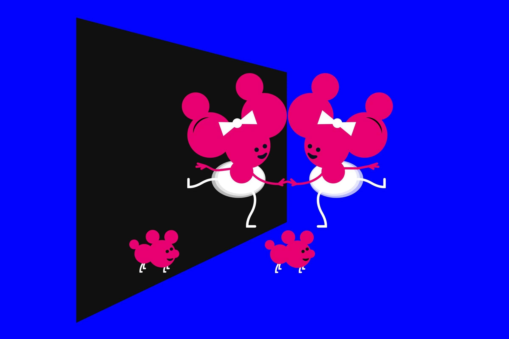

Nobel de Química 2026 premia Henri Kagan e Kenso Soai por explicar como a química “escolhe” entre moléculas espelhadas
O francês e o japonês foram reconhecidos pela descoberta de efeitos não lineares e da autocatálise na síntese orgânica assimétrica, com impacto em medicamentos e na origem da vida.

O Nobel de Química de 2026 foi para o francês Henri Kagan, 95, da Universidade Paris-Sud, e o japonês Kenso Soai, 76, da Universidade de Ciência de Tóquio. A Real Academia Sueca de Ciências anunciou nesta quarta-feira (7) que a dupla foi premiada pela descoberta de efeitos não lineares e da autocatálise na síntese orgânica assimétrica.
Muitas moléculas, como os aminoácidos, existem em duas versões que são imagens espelhadas uma da outra, como as mãos direita e esquerda. A vida, porém, usa quase sempre só uma delas, e as reações em laboratório tendiam a produzir as duas em partes iguais. Os trabalhos de Kagan e Soai mostraram como uma das versões pode passar a predominar, ajudando a explicar essa preferência da natureza.
A descoberta tem peso prático na fabricação de remédios, já que cada versão de uma molécula pode ter efeitos muito diferentes no corpo, e também em aromas e novos materiais. O prêmio é de 12 milhões de coroas suecas, cerca de R$ 6 milhões. “É um dos dias mais excitantes da minha vida”, disse Soai.